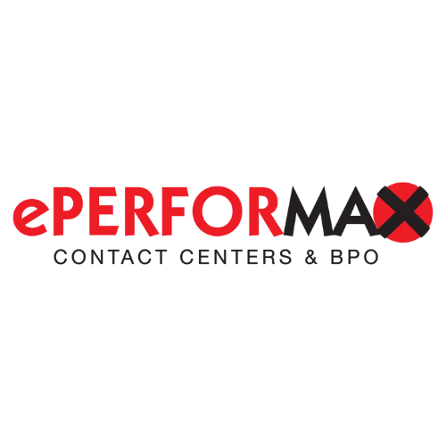

Experienced customer service and virtual assistant with a strong background in administrative support, social media management, graphics design, and customer service. Skilled in enhancing customer satisfaction, streamlining processes, and creating engaging content. Known for excellent communication and multitasking abilities in dynamic environments.
Work Experience
Sales and Marketing Support | July 2023 - Present
Created email campaigns and monthly newsletters, including holiday-themed graphics designs.
Assisted the sales team by setting up appointments and handling various inquiries.
Developed and maintained detailed reports for tracking and analysis purposes.
Graphic Designer | September 2023 - December 2023
Created marketing materials such as menus, logo, pamphlets in accordance to the client's needs.
Ensured all designs align with the client's brand identity, maintained a cohesive look across various platforms.
Handled several design tasks simultaneously, prioritizing to meet deadlines.
HR Virtual Assistant | PE Careers | February 2023 - April 2023
Helped manage the HR team in reaching the set KPIs.
Hired new team members according to the company's qualifications.
Controlled and monitored performance of the new team members.

Customer Service Representative | May 2022 - January 2023
Confidently answered contacts through multiple channels (ie. Phone, E-mail, Chat) of PayPal customers from North America and Canada.
Championed the customers' issues and worked on their behalf to achieve a resolution to queries in real-time and built long-term loyalty and value.
Adhered to guidelines for account confidentiality and maintained the privacy and security of all the client's customeers.
Education
Polytechnic University of the Philippines | 2018- 2022
Bachelor of Science in Business Administration Major in Financial Management
Honorato C. Perez Sr. Memorial Science High School | 2016 - 2018